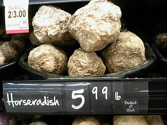

ホースラディッシュの生産量 都道府県ランキング
収穫量
ホースラディッシュの収穫量が全国で最も多いのは北海道で、2,090 tです。全国（2,090 t）の100%を占めます。

| 順位 | 都道府県 | 収穫量 | 全国に占める割合 |
|---|---|---|---|
| 1位 | 北海道 | 2,090 t | 100% |
ホースラディッシュの生産量の推移（令和2年産〜令和6年産）
全国の収穫量は、令和2年産の2,290 tから令和6年産の2,090 tへ、9%減りました。期間中、1位は一貫して北海道です。
| 年 | 全国 | 1位 | 2位 | 3位 |
|---|---|---|---|---|
| 令和6年産 | 2,090 t | 北海道2,090 t | ||
| 令和4年産 | 1,820 t | 北海道1,820 t | ||
| 令和2年産 | 2,290 t | 北海道2,290 t |
この数字について
- 分類：アブラナ科
- 全国の収穫量：2,090 t
- この数字が表すもの：収穫量（収穫された重量）
- 調査：地域特産野菜生産状況調査 令和6年産
- 1県分を調査（調査していない県は順位に入りません）
ホースラディッシュの生産量について、よくある質問
- ホースラディッシュの生産量が日本一の都道府県はどこですか？
- 北海道です。地域特産野菜生産状況調査（令和6年産）で2,090 tでした。
- ホースラディッシュの全国の生産量はどれくらいですか？
- 2,090 t（令和6年産）です。